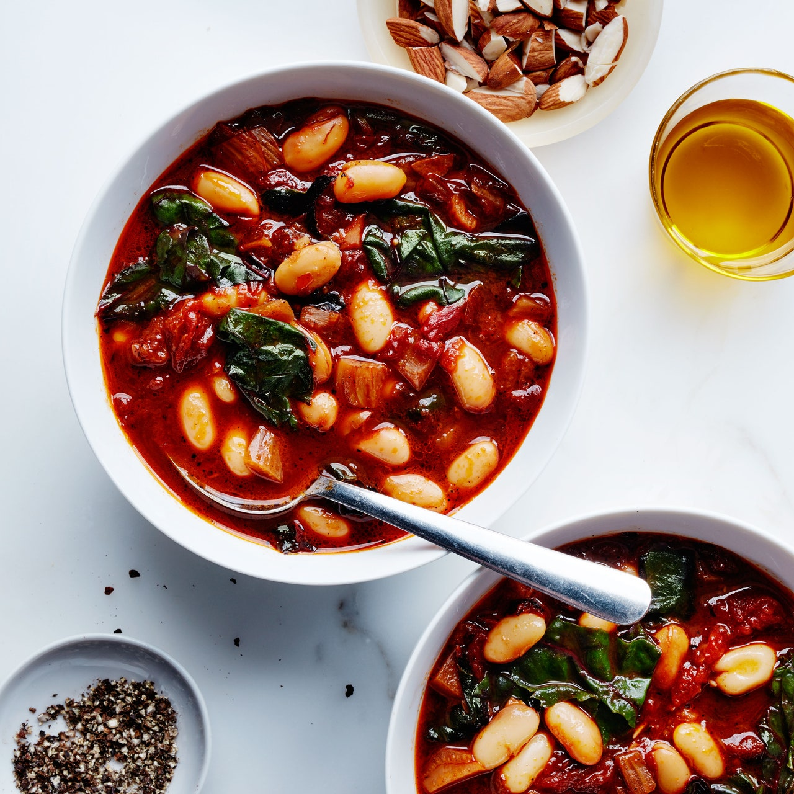

Tomato and Cannellini Bean Soup

Image Above: Photography and Food Styling by Eva Kolenko
Tomato and Cannellini Bean Soup is a fun recipe that's sure to impress any guest.
In this recipe, spinach can be substituted or used with any greens.
Ingredients:
- 1 cup cannellini or other small white beans
- 1 onion, finely chopped
- 4 garlic cloves, crushed
- 4 tablespoons olive oil
- 1 can of diced tomatoes
- 1 fennel bulb, cored, chopped
- 4 cups vegetable stock
- 5 handfuls of spinach (optional)
Instructions:
- Heat 2 Tbsp. oil in a large heavy pot over medium-high. Add tomatoes and a pinch of salt. Cook tomatoes, undisturbed, until caramelized and borderline blackened on one side, about 5 minutes. Break up tomatoes, scraping bottom of pot, and continue to cook, scraping and stirring occasionally, until tomatoes are caramelized all over, about 5 minutes more.
- Add onion, fennel and garlic, cook, stirring often, until vegetables are soft and starting to brown around edges, 8–10 minutes. Add beans along with stock / broth. Bring to a simmer; season with salt. Cook until flavors meld, 30–45 minutes.
- Stir in spinach until wilted and serve.